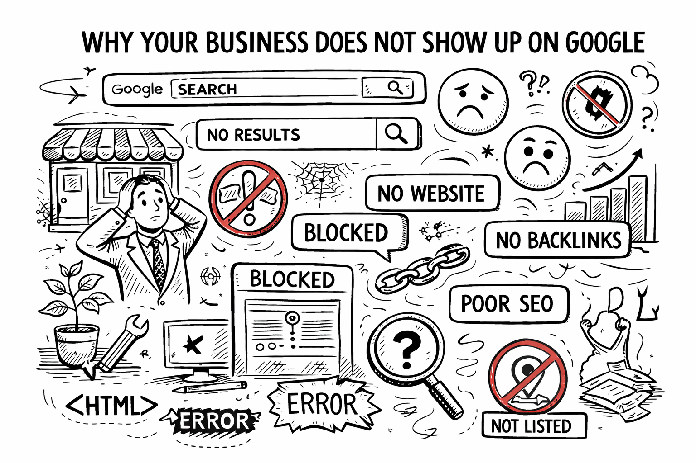

Why Your Business Does Not Show Up on Google (and How to Fix It)

You run a great business. Your customers love you. But when someone searches for your service on Google, you are nowhere to be found. Meanwhile, your competitor, who honestly does worse work than you, shows up right at the top.
Frustrating, right? The truth is, Google does not rank the best business. Google ranks the most visible business. And visibility comes from doing a few specific things correctly online.
Here are the 5 most common reasons your business is invisible on Google, and exactly what to do about each one.
Reason 1: You Do Not Have a Website
This is the most obvious reason, yet it is the most common one among small businesses in India. If you do not have a website, you are essentially invisible to Google's search results.
A Facebook page or Instagram profile is not a substitute. Google does not rank social media profiles as highly as proper websites for local business searches. When someone searches "dentist near me" or "coaching institute in Jaipur," Google wants to show them a dedicated website with detailed information about services, location, contact details, and reviews.
How to fix it
Get a professional website. Even a simple 3 to 5 page website with your services, contact information, and Google Maps integration is enough to start showing up on Google. At Vixel, our Starter package does exactly this for ₹9,999.
Reason 2: Your Website is Not Optimized for Search (No SEO)
Having a website is step one. But if your website is not optimized for search engines, Google still cannot find it properly. SEO (Search Engine Optimization) is what tells Google what your website is about and why it should show your site to searchers.
Common SEO problems we see on business websites:
- No page titles or meta descriptions: These are the text snippets that appear in Google search results. If they are missing or generic, Google has no idea what your page is about.
- No keyword targeting: Your website content does not include the words people actually search for. If you are a dentist in Lucknow, your website should mention "dentist in Lucknow" naturally throughout the content.
- No header structure: Google reads your H1, H2, and H3 headings to understand your content hierarchy. If your headings are random or missing, Google gets confused.
- No image alt text: Google cannot "see" images. Alt text describes your images in words so Google can understand and index them.
How to fix it
Audit your website for basic SEO. Make sure every page has a unique title tag (under 60 characters), a meta description (under 155 characters), proper H1 and H2 headings, and alt text on every image. Use keywords naturally in your content, not stuffed artificially.
Reason 3: You Have No Google Business Profile
This is the single most impactful thing you can do for local SEO, and it is completely free. A Google Business Profile (formerly Google My Business) is what makes your business appear in the map results, the sidebar, and the "near me" searches.
When someone searches "restaurant near me," Google does not show regular website results first. It shows the Map Pack, which is the top 3 local businesses with their reviews, photos, hours, and location. If you are not on Google Business Profile, you are not in this map pack. Period.
How to fix it
- Go to business.google.com
- Create your business listing with accurate name, address, phone number
- Choose the right business categories
- Add high-quality photos of your business (at least 10)
- Write a detailed business description with your target keywords
- Add your website URL
- Set your business hours
- Start collecting Google reviews from happy customers
Reason 4: Your Website is Too Slow
Google has publicly stated that page speed is a ranking factor. If your website takes more than 3 seconds to load, two things happen: Google ranks you lower, and visitors leave before they even see your content.
Common causes of slow websites:
- Large, uncompressed images (the number one culprit)
- Cheap, overloaded shared hosting
- Too many plugins or scripts
- No caching or CDN setup
- Heavy page builders like Elementor with excessive animations
How to fix it
Test your website speed at PageSpeed Insights (pagespeed.web.dev). Aim for a score above 80 on mobile. Compress all images (use WebP format), enable caching, use a CDN, and consider faster hosting. Or better yet, use a static website built with clean code, which naturally loads in under 1 second.
Reason 5: You Have No Reviews (or Bad Reviews)
Google uses reviews as a trust signal. A business with 50 five-star reviews will almost always rank higher than a business with 3 reviews or no reviews at all. Reviews also directly affect whether someone clicks on your listing or skips it.
Think about your own behavior. When you search for a restaurant, do you click on the one with 4.5 stars and 120 reviews, or the one with 3 stars and 2 reviews? Your customers think the same way.
How to fix it
- Ask every happy customer for a Google review (most people are willing if you ask)
- Make it easy by sending them a direct link to your Google review page
- Respond to every review, positive or negative, professionally
- Never buy fake reviews because Google detects and penalizes this
- Aim for at least 20 reviews to start seeing a ranking boost
The Bottom Line
Google is not complicated. It rewards businesses that make it easy for customers to find information online. If you have a fast, mobile-friendly website with proper SEO, a complete Google Business Profile, and genuine customer reviews, you will outrank 90% of your local competition.
The businesses that show up on the first page of Google are not always the best at their craft. They are the ones who took their online presence seriously. Do not let a competitor with worse service steal your customers just because they have a better website.
Not sure where your business stands on Google?
We will audit your online presence for free and show you exactly what needs to be fixed. No strings attached.
Get Your Free Demo →